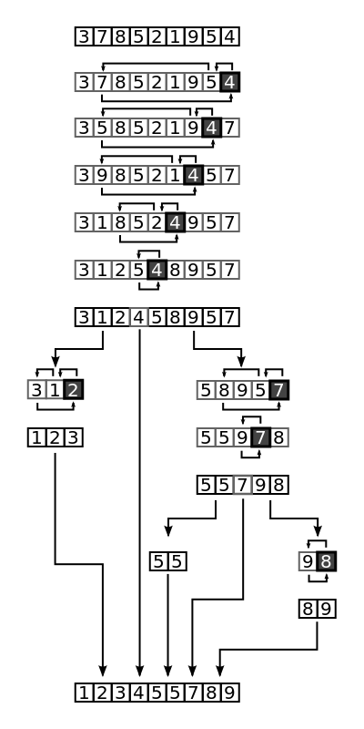

@Component
selector -> html element,
template/templateUrl,
directives:[]
Every Ng2 app needs root module
@NgModule
imports: helper modules,
declarations: app components,
bootstrap: main component,
entryComponents: components loaded without selectors
providers: services
main.ts bootsraps module to index.html exe my-app
@Directives
selector-> html element
@Injectable-> services
Big-O Algorithm Compleixty
O(n!) > O(2^n) > O(n^2) > O(n log n) > O(n) > O(log n) > O(1)
Quick Sort
Pick a pivot, reorrder according to pivot, repeat subarray.

Design
Uses, Constraints, Abstract Design(Components Required), Bottlenecks, Scalability
OO
Prototypes
Every javascript object has a prototype.
__proto__ is the actual object that is used in the lookup chain to resolve methods, etc.
prototype is the object that is used to build __proto__ when you create an object with new:
Prototype Inherit 1
function Person(){{'{}'}}
function Child(){{'{}'}}
Child.prototype = Object.create(Person.prototype);
Child.prototype.constructor = Child;
Prototype Inherit 2
function Person(){{'{}'}}
function Child(){{'{}'}}
function __()
__.prototype = Person.prototype;
Child.prototype = new __();
Child.prototype.constructor = Child;
ES6 Class
class Person{{'{}'}}
class Child extends Person{{'{}'}}
ES6
var is function scoped
let is block scoped
var is function scoped
let is block scoped